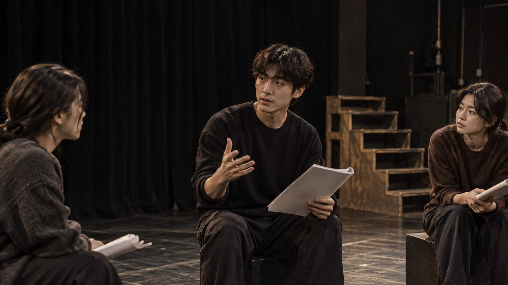
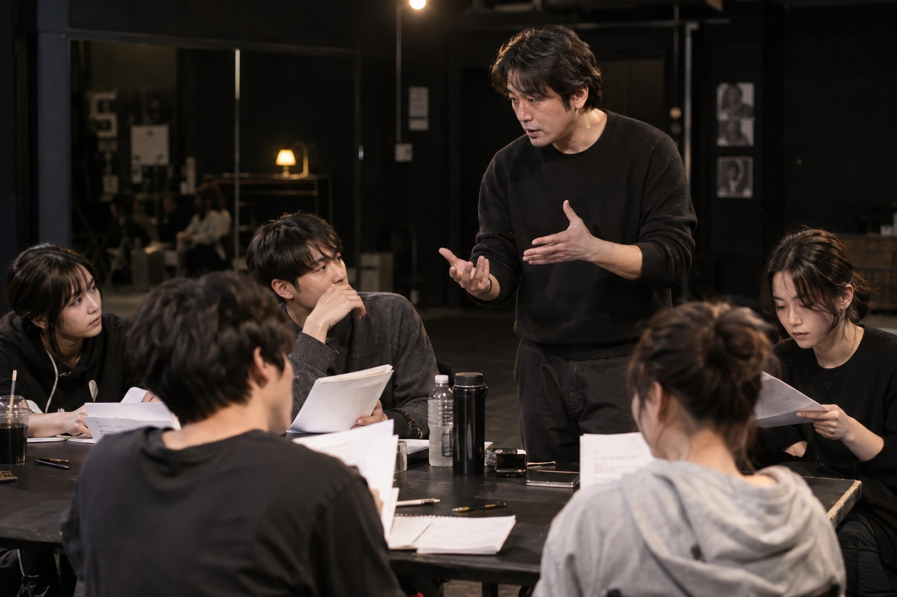

THE FIRST STEP연기 베이직01BODY · VOICE · EMOTION
BEGINNER / 기초 과정
연기 베이직
몸을 깨우고, 목소리를 찾고.
연기가 처음인 당신을 위한 첫 수업.

KIM JUNG TAE ACTING ACADEMY
ACT TRUE. BECOME YOU.
몸과 목소리의 기초부터 카메라 앞의 섬세한 표현까지.
대본을 읽고, 장면을 만들고, 나만의 연기를 발견합니다.
당신의 가능성, 김정태 배우아카데미에서 시작하세요.
/ About Us /

누군가를 흉내 내기보다, 나만의 감각으로 세상을 바라보는 일. 우리는 그곳에서 연기가 시작된다고 믿습니다.
몸과 목소리의 기초부터 인물을 이해하는 깊이까지.
작은 시도와 구체적인 피드백으로 당신의 가능성을 넓혀갑니다.
/ Acting Programs /
처음이어도, 더 깊이 배우고 싶어도.
당신의 출발점에 맞는 수업이 있습니다.
전체 교육과정 안내 ↗
BEGINNER / 기초 과정
몸을 깨우고, 목소리를 찾고.
연기가 처음인 당신을 위한 첫 수업.
ON CAMERA / 매체 과정
작은 눈빛부터 장면의 호흡까지.
카메라 앞에서 자연스러워지는 시간.
NEXT LEVEL / 집중 과정
나에게 어울리는 작품으로,
나를 보여줄 결정적인 한 장면.
/ Your Journey /
기초를 익히고, 장면을 만들고,
카메라 앞에서 나를 표현하는 시간.
호흡, 발성, 신체 이완에서 시작하는 배우의 첫 단추.
경직된 긴장을 풀고 나만의 고유한 호흡과 소리의 울림을 찾는 단계입니다.
/ How It Works /
지금의 표현 습관을 살피고 나만의 강점을 찾습니다.
대본 분석, 파트너 연기, 촬영 실습으로 장면을 만듭니다.
연기를 다시 보고, 구체적인 피드백을 다음 시도에 담습니다.
/ Actors & Stories /
카메라 앞에서 발견하는 새로운 모습.
당신의 다음 장면을 그려보세요.
수강생 작품 활동 및 캐스팅 현황 ↗
처음 만나는 나의 가능성
인물의 마음으로 들어가는 일
나만의 호흡으로 만드는 장면
다음 무대를 향한 준비
/ Student Reviews /
두려움을 딛고 카메라 앞에 선 수강생들의 진솔한 변화의 기록입니다.
수강후기 전체보기 ↗
매 수업 4K 카메라 촬영 후 모니터링을 진행하는데, 눈 깜빡임 하나, 턱 끝의 미세한 떨림까지 과학적으로 짚어주셔서 시선이 단단해졌습니다. 첫 숏폼 드라마 주연 캐스팅의 기쁨을 안겨준 곳입니다.
평범한 직장인이라 처음엔 두려웠지만, 남과 비교하지 않고 내 안의 솔직한 감정을 꺼내는 훈련을 받았습니다. 일상에서 억눌린 감정을 대사로 표현하며 자존감도 크게 높아졌습니다.
원장님께서 제 마스크와 음색에 맞는 캐릭터 독백을 직접 재구성해 주셨고, 셀프테이프의 첫 3초 인트로 구성법까지 배우고 나니 서류 통과율이 급상승해 OTT 단역에 최종 캐스팅되었습니다.
상대 배우의 표정과 호흡에 즉각 반응하는 훈련을 거치며 연기가 살아 숨 쉬는 기분을 처음 느꼈습니다. 현장에서 감독님의 디렉팅에 유연하게 대처할 수 있는 힘이 생겼습니다.
/ Meet Your Coaches /
분야별 수업 방향을 만나보세요.
아래 인물은 교육진 소개를 위한 목업입니다.
전체 강사소개 ↗
/ Space To Create /
연습부터 촬영까지, 공간 구성 예시.
사진은 실제 학원 시설이 아닌 참고 이미지입니다.
시설 안내 자세히 보기 ↗
장면 연습과 발표를 위한 공연 공간
함께 읽고 의견을 나누는 연습 공간
완성한 장면을 관객 앞에 선보이는 무대
/ Find Your Class /
지금 가장 가까운 마음을 골라보세요.
당신의 첫 클래스를 함께 찾아볼게요.
지금, 연기를 배우려는 이유는 무엇인가요?
경험이 없어도 괜찮아요. 몸과 목소리를 알아가는 것부터 시작하세요.
물론입니다. 연기 베이직은 처음 시작하는 분을 위한 과정입니다. 호흡과 발성, 움직임부터 차근차근 익히고 짧은 장면으로 표현을 연습합니다.
기초를 익히고 싶다면 연기 베이직, 촬영 실습에 집중하고 싶다면 카메라 연기를 추천합니다. 명확한 입시·오디션 목표가 있다면 집중 과정의 커리큘럼을 살펴보세요.
편하게 움직일 수 있는 복장과 필기구, 물을 준비해주세요. 대본과 개별 준비사항은 수강하는 과정에 따라 달라집니다.
작품 선정과 인물 분석, 독백 구성, 모의 오디션과 셀프테이프를 연습합니다. 목표에 맞춰 표현을 점검하고 자신을 소개하는 방법을 준비합니다.
/ Your Next Scene /